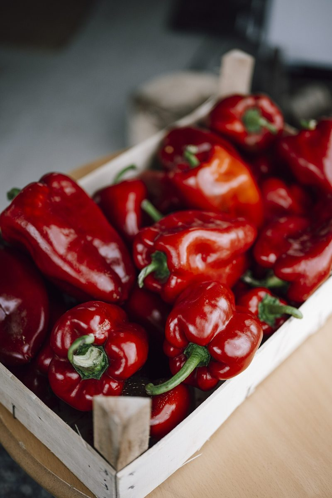
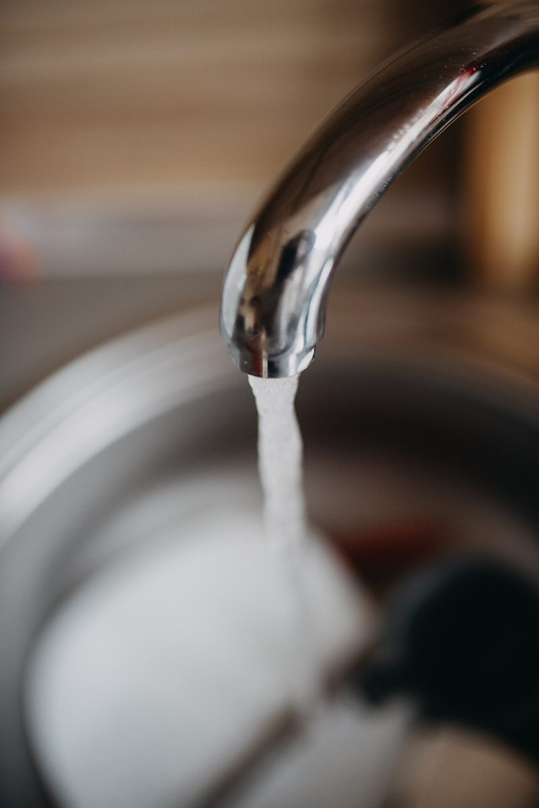
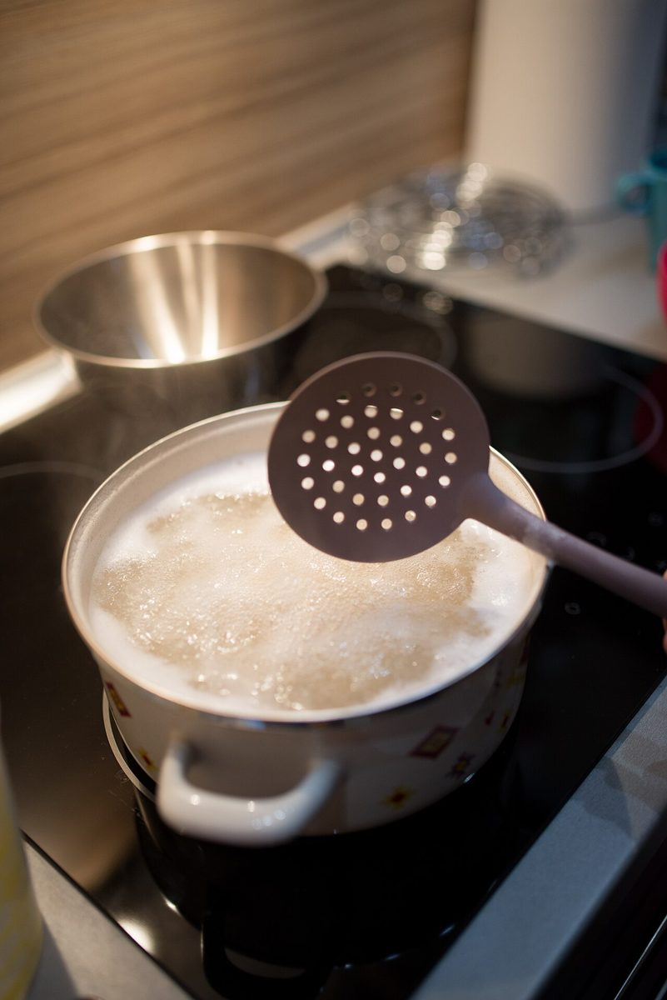

カフェ・キッチン / 大分県中津市
イエール
タウンキッチン
大分県中津市中央町にあるカフェ・キッチン「イエールタウンキッチン」のご案内ページです。営業時間やメニューなど、詳しいことは準備中。電話とInstagramで確認できます。
制作側の連想
「キッチン」から、台所の三角形を連想しました
屋号の由来は分かりません。制作側は店名の「キッチン」から、台所の使いやすさを考えるときに語られる「冷蔵庫・流し・コンロを結ぶ三角形」の考え方を連想しました。そこでこのサイトは、台所の仕事を「しまう」「洗う」「火を入れる」の3つの頂点に見立て、ページを組み立てています。お店の理念・由来・実際の台所とは無関係の、制作側の連想です。
三つの頂点(イメージ)
三角形をたどる
- しまう食材を受け取り、置き場所を決める。
- 洗う水で洗い、下ごしらえの準備をする。
- 火を入れる火にかけて、ひと皿に仕上げる。
三角形のたとえ話であり、お店の実際の作業や設備を示すものではありません。下の写真もお店のものではなく、撮影地が不明のフリー素材です。
頂点1しまう
しまう
食材が来て、置き場所が決まるところ。木箱に並んだ野菜のイメージです。

頂点2洗う
洗う
蛇口をひねって、水の音から始まる準備。流れる水のイメージです。

頂点3火を入れる
火を入れる
コンロの火で湯が沸き、鍋が温まっていく。火と湯気のイメージです。

ご案内
お店のこと(確認できたものだけ)
| 所在地 | 〒871-0024 大分県中津市中央町2丁目4-53 |
|---|---|
| 電話 | 080-3370-0321 |
| 営業時間 | 準備中 |
| 定休日 | 準備中 |
| ご予約 | 準備中 |
| 駐車場 | 準備中 |
| SNS | Instagram @yaletownkitchen |